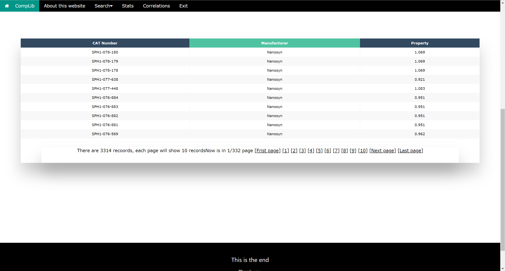

This website is a compounds library. The data are extracted from structure-data files and made into three tabular forms.
The tables are the compounds' molecular information, manufacturers, and smiles string.
This website is connected with a MySQL database about compounds that allow users to search for compound information.
This website supports many kinds of search methods.
The details are below.
The welcome page is shown in Figure 1.
The user should enter a valid first and second name (a fake name is also acceptable) before clicking the "Log in" button.
The home page is shown in Figure 2.
This is the home page for this website, the user can go to each page through the links in the content or through the Navbar.
Go back to Home Page
Figure 1. Welcome Page
Figure 2. Home Page
The compounds are from five different manufacturers in the database, and all of them have 12 different features.
Figure 3 searches all the compounds through their manufacturers.
The users only need to select the manufacturers they are interested in and hit "Done."
The output table will only show ten records on each page.
Users can click the "next page" or the page number to go to the other pages.
Go to Search Manufacturers Page
Figure 3. Search Manufacturers
Figure 4 is the home page for the Compounds search page.
Users can input a range of Atomes, Carbons, Nitrogens, and Oxygens.
Then the model will search all the compounds within this range.
Note: Users have to enter both the max and min for the feature they are interested in.
After the users choose their range and hit "List All Results," the output information is in a table, as shown in Figure 5.
It includes the Catalogue Name, Manufacturer, Smiles String, and the structure graph for the compounds.
The users can sort the form by clicking the sorting feature's table head.
If the users are interested in the 3D structure of the compound, they can click the "More" link for a 3D structure display page, as shown in Figure 6.
Users can spin the compound to learn its detailed structure.
Go to Search Compounds Page
Figure 4. Compounds Search Page
Figure 5. Compounds Output Results
Figure 6. 3D Structure Display
Figure 7 is the Property Search page, and the users can first choose from molecular weight, topological polar surface area, and estimated LogP.
Then, the users need to enter a valid number before hitting "Done."
So the users can search these three features through their properties, and the results are in Figure 8.
As usual, only ten records will be shown on the first page, but the users can choose to go to the other pages.
Go to Search Property Page
Figure 7. Search Through Property
Figure 8. Search Through Property Results

The users can have a basic knowledge about the data set through this page in Figure 9.
To compute the statistic of 12 properties, all chemicals from five manufacturers are employed.
The users can choose the feature that they are interested in. The output results are shown in Figure 10.
Go to Stats Page
Figure 9. Correlation Calculation
Figure 10. Correlation Calculation Results
Here is the page that can calculate the correlation between two features in Figure 11.
The users need to choose two features from both the left and right sides of the checkbox before hitting the submit button.
After that, it will calculate the correlation value and plot the density plot for the two selected features, as shown in Figure 12.
Go to Correlation Calculation Page
Figure 11. Correlation Calculation
Figure 12. Correlation Calculation Results
When the users hit the "Exit," then they will exit the website.
They can come back to this website only by re-login.
Exit